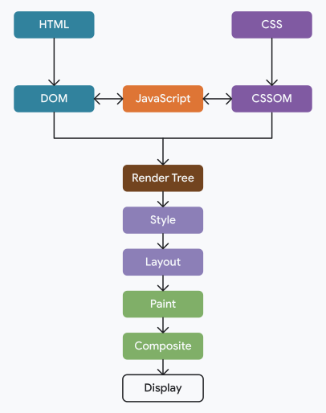

Critical Rendering Path (CRP)
The Critical Rendering Path is the sequence of steps the browser performs to turn HTML, CSS, and JavaScript into the pixels you see on screen. Understanding it helps you write pages that feel fast.
The 5 steps

- DOM + CSSOM: the browser parses the HTML into the DOM tree (the structure of your page) and the CSS into the CSSOM tree (all the styles that apply). Both trees are built in parallel.
-
Render Tree: the browser merges the DOM and the
CSSOM into a single tree that contains only the nodes that will
actually be displayed (it skips things like
display: noneor<head>). - Layout (a.k.a. Reflow): the browser calculates the exact size and position of every visible node. Anything that changes geometry — width, height, font-size, adding or removing elements — forces a new layout.
-
Paint: the browser fills in the pixels: colors,
text, borders, shadows, images. If you only change a visual
property like
colororbackground, the browser can repaint without doing a new layout. -
Composite: the page is split into layers (think
of them like transparencies stacked on top of each other) and
the GPU combines them into the final image. Properties like
transformandopacitycan be animated on this step alone, which is why they feel so smooth.
How JavaScript can block the HTML parser
The HTML parser reads your document top to bottom. When it finds a
<script> tag, by default it has to
stop parsing, download the file, execute it, and
only then continue. This is called a
parser-blocking script.
Why does the browser do this? Because the script could call
document.write() or modify the DOM that is being built.
The browser plays safe and waits.
The consequence: if you put a heavy <script> tag
in the <head>, the user sees a blank page until
that script is downloaded and executed. Layout and Paint never even
get to start.
The classic solution: async vs defer
Both attributes tell the browser: "keep parsing the HTML, don't wait for me to download". The difference is when the script is executed once it is ready.
-
<script src="...">(default): download blocks, execution blocks. Worst case for performance. -
<script async src="...">: the script is downloaded in parallel with the HTML parsing, and executed as soon as it arrives, pausing the parser at that moment. Order between async scripts is not guaranteed. Good for independent scripts (analytics, ads). -
<script defer src="...">: the script is downloaded in parallel, but execution is deferred until the HTML is fully parsed, right beforeDOMContentLoaded. Order is preserved. This is the safe default for scripts that touch the DOM or depend on each other.
Rule of thumb for beginners: if you don't know
which one to pick, use defer and place your scripts in
the <head>. The browser will start downloading
them early, but won't run them until the DOM exists — so your
document.getElementById(...) calls won't return
null.
Memory Heap y Stack
Key idea: The Stack stores primitive values and function execution frames. It is fast, ordered, and limited in size.
The Heap stores objects, arrays, and functions. It is flexible but less structured, and this is where memory leaks usually happen.
Memory is not infinite. If you keep unused references in the Heap, the Garbage Collector must do more work, which can pause execution (stop-the-world pauses). On 32-bit systems, you get about 700 MB, while 64-bit platforms allow up to 1400 MB.
Memory Allocation
When you create objects in JavaScript, V8 allocates memory automatically. These objects are stored in the Heap.
- New Space: for newly created objects. It is small and optimized for fast allocation and cleanup.
- Old Space: for objects that live longer and survive garbage collection cycles.

Garbage Collection
V8 uses a Generational Garbage Collection strategy, splitting memory into two regions:
- Young Generation (Scavenge): holds newly created objects. A fast copy-based algorithm moves live objects between two equal-sized spaces and discards the rest. Most JS objects die young, so this is very efficient.
- Old Generation (Mark-Sweep-Compact): objects that survive several Scavenge cycles are promoted here. V8 uses Mark-and-Sweep to find and free dead objects, then Mark-Compact to defragment the remaining live objects.
To avoid long stop-the-world pauses, V8 runs most of this work incrementally (in small steps interleaved with JS execution) or concurrently (on background threads).
Additional Optimizations
- Lazy Sweeping: memory is not swept all at once; it is reclaimed on demand as new allocations require it.
- Hidden Classes: V8 infers a hidden class for each object shape, making property access and memory layout predictable and fast.
WeakMap & WeakSet
Both are "weak" variants of Map and Set.
Their keys/values must be objects, and the
reference they hold is weak: if no other part of the
program keeps a reference to that object, the Garbage Collector can
collect it and the entry disappears automatically. This makes them
ideal for avoiding memory leaks in caches and metadata stores.
WeakMap
-
Private metadata: store hidden state keyed by an
instance (
this) so it never appears on the object itself and is freed when the instance is collected. - Leak-free cache: attach computed results to DOM nodes without preventing those nodes from being removed from memory once they leave the document.
WeakSet
- Track whether an object has already been processed (e.g. visited nodes in a graph, serialised objects) without holding a strong reference that would keep them alive forever.
Key differences vs Map / Set
- Keys/values must be objects — no primitives allowed.
-
Not iterable and have no
.size— you cannot enumerate their contents, which is intentional (the GC controls lifetime). - References are weak, so they do not prevent garbage collection.
Open the browser console to see the WeakMap cache and WeakSet tracking examples in action.
Reflow and Repaint demo
Use these buttons to show the difference: Reflow changes layout (size/position), and Repaint changes only visual style (color).
DOM Interaction Optimization
Compare a bad DOM update strategy with a better one. The bad version updates and reads layout many times. The good version batches DOM changes.
Click one of the buttons to run the comparison.
Lighthouse
Demo Time
Performance tips
- Minimize DOM manipulations.
- Use requestAnimationFrame for animations.
- Debounce or throttle expensive operations.
- Avoid memory leaks by cleaning up event listeners.
- Optimize images and assets for faster loading.
- The order of the imports can affect performance.
- Use preload and prefetch for critical resources.
- Use CDN for faster content delivery.